리눅스마스터-2급 (2021-12-11 기출문제)
1과목: 리눅스 운영 및 관리
1. 다음 중 스캐너 관련 API로 알맞은 것은?
- OSS
- ALSA
- SANE
- CUPS
(정답률: 82%)

2. 다음 중 CentOS 7에서 X 윈도 기반으로 프린터를 설정할 때 사용하는 명령으로 알맞은 것은?
- printconf
- printtool
- system-config-printer
- redhat-config-printer
(정답률: 83%)
3. 다음 설명에 해당하는 RAID 기술로 알맞은 것은?
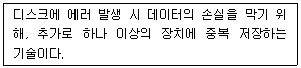
- Volume Group
- Linear
- Striping
- Mirroring
(정답률: 82%)
4. 다음 설명과 같은 상황에서 사용해야 하는 기술로 가장 알맞은 것은?
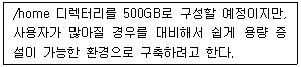
- LVM
- RAID
- Bonding
- Clustering
(정답률: 70%)
5. 다음 설명에 해당하는 용어로 알맞은 것은?
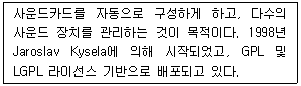
- OSS
- ALSA
- SANE
- CUPS
(정답률: 71%)
6. 다음 중 용량이 2GB 하드디스크 7개를 이용하여 RAID-6로 구성했을 때 가용 공간으로 알맞은 것은?
- 8GB
- 10GB
- 12GB
- 14GB
(정답률: 65%)
7. 다음 중 sendmail 패키지를 제거하는 명령으로 알맞은 것은?
- rpm –i sendmail
- rpm –r sendmail
- rpm –e sendmail
- rpm –d sendmail
(정답률: 61%)
8. 다음 ( 괄호 ) 안에 들어갈 내용으로 알맞은 것은?
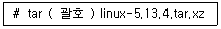
- jxvf
- Jxvf
- zxvf
- Zxvf
(정답률: 57%)
9. 다음 중 소스 설치 과정 중에서 configure 작업 후에 관련 정보가 저장되는 파일명으로 알맞은 것은?
- install
- .config
- .configure
- Makefile
(정답률: 72%)
10. 다음 중 yum 기반으로 작업한 목록을 확인하는 명령으로 알맞은 것은?
- yum list
- yum worklist
- yum work list
- yum history
(정답률: 70%)
11. 다음은 묶여있는 tar 파일을 /usr/local/src 디렉터리에 푸는 과정이다. ( 괄호 ) 안에 들어갈 내용으로 알맞은 것은?
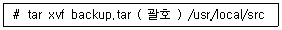
- -d
- -D
- -c
- -C
(정답률: 48%)
12. 아파치 웹 서버를 소스 설치하는 과정에서 configure를 진행했으나 다시 configure 하기 위해 관련 파일들을 제거하려고 한다. 다음 ( 괄호 ) 안에 들어갈 내용으로 알맞은 것은?
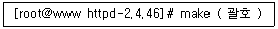
- clean
- delete
- remove
- reconfigure
(정답률: 63%)
13. 다음 중 SUSE 리눅스에서 사용하는 패키지 관리 도구로 가장 알맞은 것은?
- rpm
- yum
- dpkg
- zypper
(정답률: 70%)
14. 다음 중 레드햇 리눅스에서 사용되는 패키지 관리 도구로 가장 거리가 먼 것은?
- rpm
- yum
- dnf
- pacman
(정답률: 65%)
15. 다음 설명에 해당하는 vi 편집기의 환경 설정 값으로 알맞은 것은?
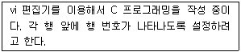
- set no
- set nu
- set ai
- set list
(정답률: 81%)
16. 다음 중 vi 편집기의 명령 모드에서 편집모드로 전환하는 키로 틀린 것은?
- a
- e
- i
- o
(정답률: 67%)
17. 다음 중 vi 편집기에서 줄의 시작이 linux일 때 Linux로 치환하는 명령으로 알맞은 것은?
- :% s/\linux/Linux/
- :% s/\＜linux/Linux/
- :% s/^linux/Linux/
- :% s/$linux/Linux/
(정답률: 62%)
18. vi 편집기로 line.txt 파일의 내용을 불러오면서 커서의 위치를 마지막 줄에 위치시키려고 한다. 다음 ( 괄호 ) 안에 들어갈 옵션으로 알맞은 것은?
- +
- -e
- -l
- -L
(정답률: 56%)
19. 다음 중 GNU 프로젝트에 의해 만들어진 편집기로 알맞은 것은?
- vi
- vim
- nano
- pico
(정답률: 53%)
20. 다음 중 emacs 편집기 개발과 밀접한 인물의 조합으로 알맞은 것은?
- 리처드 스톨먼, 제임스 고슬링
- 리처드 스톨먼, 빌 조이
- 빌 조이, 제임스 고슬링
- 제임스 고슬링, 브람 무레나르
(정답률: 71%)
21. 실행 중인 프로세스들의 CPU 사용률을 실시간으로 확인할 때 사용하는 명령으로 알맞은 것은?
- nice
- pstree
- renice
- top
(정답률: 75%)
22. 다음 명령의 결과와 가장 관련 있는 프로세스 생성 방식으로 알맞은 것은?
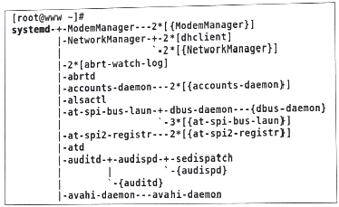
- exec
- fork
- inetd
- standalone
(정답률: 59%)
23. 다음 결과에 해당하는 명령으로 알맞은 것은?
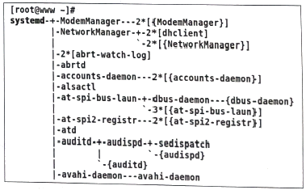
- ps
- tree
- pstree
- ps_mem
(정답률: 68%)
24. 다음은 ihduser가 cron 설정을 하는 과정이다. ( 괄호 ) 안에 들어갈 명령어의 옵션으로 알맞은 것은?
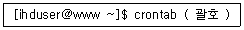
- -n
- -e
- -i
- -u
(정답률: 47%)
25. 다음 설명과 같이 cron을 설정할 때의 날짜 형식으로 알맞은 것은?
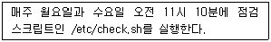
- 10 11 * * 1-3 /etc/check.sh
- 11 10 * * 1-3 /etc/check.sh
- 10 11 * * 1,3 /etc/check.sh
- 11 10 * 1,3 /etc/check.sh
(정답률: 69%)
26. 다음 중 ( 괄호 ) 안에 들어갈 내용으로 알맞은 것은?
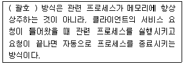
- exec
- fork
- inetd
- standalone
(정답률: 57%)
27. 다음 중 백그라운드 프로세스를 확인하는 명령으로 알맞은 것은?
- bg
- fg
- jobs
- nohup
(정답률: 67%)
28. 다음은 프로세스 아이디(PID)가 1222번인 프로세스의 우선순위 값을 –10으로 지정하는 과정이다. ( 괄호 ) 안에 들어갈 내용으로 알맞은 것은?
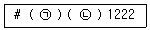
- ㉠ nice ㉡ -10
- ㉠ nice ㉡ --10
- ㉠ renice ㉡ -10
- ㉠ renice ㉡ --10
(정답률: 63%)
29. 다음 중 [Ctrl]+[\] 입력 시에 전송되는 시그널로 알맞은 것은?
- SIGINT
- SIGHUP
- SIGQUIT
- SIGTERM
(정답률: 49%)
30. 다음 중 커널이 사용하는 프로세스의 우선순위 항목으로 알맞은 것은?
- NI
- PRI
- VSZ
- RSS
(정답률: 57%)
31. 다음 설명에 해당하는 파일로 가장 알맞은 것은?
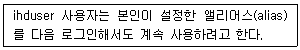
- ~/.bashrc
- ~/.bash_history
- ~/.bash_profile
- ~/.bash_logout
(정답률: 56%)
32. 다음 설명에 해당하는 파일로 알맞은 것은?
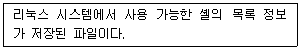
- /bin/bash
- /etc/shells
- /etc/passwd
- /etc/skel
(정답률: 68%)
33. 다음은 ihduser가 사용 가능한 셸의 정보를 확인하는 과정이다. ( 괄호 ) 안에 들어갈 옵션으로 알맞은 것은?
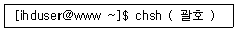
- -c
- -l
- -s
- -u
(정답률: 68%)
34. 다음 설명에 해당하는 셸로 알맞은 것은?
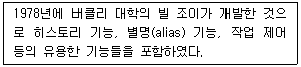
- csh
- ksh
- bash
- tcsh
(정답률: 52%)
35. 다음 중 ihduser가 로그인 셸을 변경했을 때 저장되는 파일로 알맞은 것은?
- ~/.bashrc
- ~/.bash_profile
- /etc/passwd
- /etc/shells
(정답률: 56%)
36. 다음 명령의 결과에 대한 설명으로 알맞은 것은?
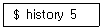
- 처음에 실행한 명령어 5개를 화면에 출력한다.
- 최근에 실행한 명령어 5개를 화면에 출력한다.
- 히스토리 목록 번호 중에서 5번에 해당하는 명령을 실행한다.
- 최근에 실행한 명령 목록 중에서 5만큼 거슬러 올라가서 해당 명령을 실행한다.
(정답률: 70%)
37. 다음 중 특정 사용자가 로그인 한 이후 선언한 셸 변수를 전부 확인할 때 사용하는 명령으로 알맞은 것은?
- env
- printenv
- set
- unset
(정답률: 57%)
38. 다음은 ihduser가 본인에게 도착하는 메일 관련 파일의 경로를 확인하는 과정이다. ( 괄호 ) 안에 들어갈 환경 변수명으로 알맞은 것은?
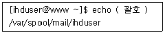
- $MAILFILE
- $MAILCHECK
- $MAILSPOOL
(정답률: 54%)
39. 다음 중 일반 사용자가 파일의 내용을 볼 수 없는 파일로 알맞은 것은?
- /etc/passwd
- /etc/shadow
- /etc/group
- /etc/fstab
(정답률: 70%)
40. 다음은 CD-ROM 드라이브의 디스크 트레이(tray)를 여는 과정이다. ( 괄호 ) 안에 들어갈 명령으로 알맞은 것은?
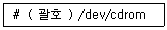
- eject
- mount
- umount
- unmount
(정답률: 62%)
41. 다음 조건에 해당하는 명령으로 알맞은 것은?
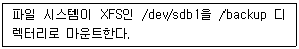
- mount –j xfs /backup /dev/sdb1
- mount –j xfs /dev/sdb1 /backup
- mount –t xfs /backup /dev/sdb1
- mount –t xfs /dev/sdb1 /backup
(정답률: 55%)
42. 다음 중 명령의 결과가 아래 경우 관련 설명으로 틀린 것은?(오류 신고가 접수된 문제입니다. 반드시 정답과 해설을 확인하시기 바랍니다.)
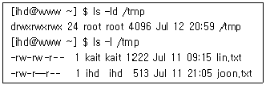
- ihd 사용자는 /tmp 디렉터리 안으로 들어갈 수 있다.
- ihd 사용자는 /tmp 디렉터리 안에 파일을 생성할 수 있다.
- ihd 사용자는 lin.txt 파일을 삭제할 수 있다.
- ihd 사용자는 joon.txt 파일을 수정할 수 없다.
(정답률: 52%)
43. 다음은 lin.sh 파일의소유자는 ihduser, 소유 그룹은 kaitgroup으로 지정하는 과정이다. ( 괄호 ) 안에 들어갈 명령으로 알맞은 것은?
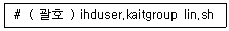
- chmod
- chown
- chgrp
- umask
(정답률: 66%)
44. 다음은 ihduser 사용자의 디스크 쿼터 설정 정보만 확인하려고 한다. ( 괄호 ) 안에 들어갈 명령으로 가장 알맞은 것은?
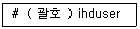
- quota
- edquota
- repquota
- xfs_quota
(정답률: 47%)
45. 다음 그림에 해당하는 명령으로 알맞은 것은?
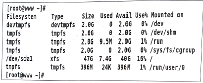
- df
- du
- mount
- lsblk
(정답률: 59%)
46. /etc/fstab의 총 6개의 필드로 구성되어 있는데, 마운트되는 디렉터리(mount point)는 몇 번째 필드인가/
- 첫 번째
- 두 번째
- 세 번째
- 네 번째
(정답률: 59%)
47. 다음 ( 괄호 ) 안에 들어갈 내용으로 알맞은 것은?
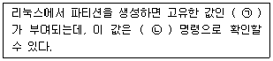
- ㉠ Set-UID ㉡ uuid
- ㉠ Set-UID ㉡ blkid
- ㉠ UUID ㉡ blkid
- ㉠ UUID ㉡ uuid
(정답률: 63%)
48. 다음 중 Set-UID 또는 Set-GID와 같은 특수 권한이 설정된 파일로 알맞은 것은?
- /usr/bin/passwd
- /usr/sbin/useradd
- /etc/passwd
- /etc/shadow
(정답률: 36%)
2과목: 리눅스 활용
49. 다음 설명에 해당하는 용어로 가장 알맞은 것은?
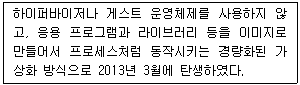
- 도커(Docker)
- 쿠버네티스(Kubernetes)
- 앤서블(Ansible)
- 오픈스택(OpenStack)
(정답률: 66%)
50. 다음 중 업무 처리에 필요한 서버나 스토리지와 같은 IT 하드웨어 자원을 빌려 쓰는 클라우드 서비스로 알맞은 것은?
- SaaS
- IaaS
- DaaS
- PaaS
(정답률: 64%)
51. 다음 설명에 해당하는 플랫폼으로 알맞은 것은?
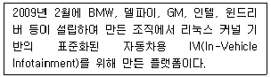
- MeeGo IVI
- Tizen IVI
- GENIVI
- Android IVI
(정답률: 63%)
52. 다음 설명에 해당하는 리눅스 배포판으로 알맞은 것은?
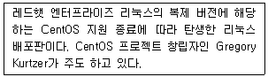
- Rocky Linux
- Arch Linux
- Alma Linux
- Linux Mint
(정답률: 52%)
53. 전송 매체를 광섬유 케이블(Optical Fiber Cable)을 사용하여 설계된 링 구조의 통신망으로 네트워크 액세스를 제어하기 위해 토큰 패싱 방법을 사용하는 LAN 전송방식으로 알맞은 것은?
- Token Ring
- Ethernet
- X.25
- FDDI
(정답률: 50%)
54. 다음 중 파일 전송 및 다운로드 진행 상태를 ‘#’ 기호로 확인할 때 사용하는 FTP 명령어로 알맞은 것은?
- open
- hash
- status
- chmod
(정답률: 62%)
55. 다음 중 모질라 재단에서 개발한 자유 소프트웨어로 게코(Gecko) 레이아웃 엔진을 사용한 웹 브라우저로 알맞은 것은?
- 파이어폭스
- 크롬
- 엣지
- 익스플로어
(정답률: 77%)
56. 다음 중 최상위 도메인으로 틀린 것은?
- com
- mil
- org
- or
(정답률: 63%)
57. 다음 중 주요 프로토콜과 포트번호 조합으로 틀린 것은?
- SMTP - 25
- IMAP - 143
- SNMP - 53
- HTTPS – 443
(정답률: 61%)
58. 다음 중 OSI 7계층 모델에서 데이터링크 계층의 데이터 전송 단위로 알맞은 것은?
- data
- segment
- bit
- frame
(정답률: 58%)
59. 다음 중 LAN의 접속규격과 처리에 대한 표준을 제정하는 기관으로 알맞은 것은?
- ISO
- ANSI
- ITU-T
- IEEE
(정답률: 67%)
60. 다음 중 프로토콜이 다른 통신망을 상호 접속하기 위한 통신장비로 알맞은 것은?
- 게이트웨이(Gateway)
- 라우터(Router)
- 리피터(Repeater)
- 브리지(Bridge)
(정답률: 58%)
61. 다음 중 운영 중인 서버의 특정 포트에 접속하여 연결된(ESTABLISHED) 정보를 확인하는 명령의 조합으로 가장 알맞은 것은?
- ip, netstat
- ss, route
- ip, route
- ss, netstat
(정답률: 51%)
62. 리눅스 시스템에 첫 번째 네트워크 인터페이스로 설정된 eth0의 작동을 중지시킬 때 사용하는 명령어로 알맞은 것은?
- ifconfig eth0 up
- ifconfig eth0 down
- ipconfig eth0 down
- ipconfig eth0 up
(정답률: 71%)
63. 다음 중 공인 IP 주소로 알맞은 것은?
- 192.168.0.1
- 165.141.1⑤.240
- 172.30.255.254
- 10.10.10.100
(정답률: 53%)
64. 다음 중 OSI 7계층의 네트워크 계층과 관련된 프로토콜로 알맞은 것은?
- BGP
- TCP
- UDP
- SMB
(정답률: 44%)
65. 다음 중 3-way handshaking을 수행하는 프로토콜로 알맞은 것은?
- TCP
- UDP
- ICMP
- SNMP
(정답률: 65%)
66. 다음 중 Secure 기반의 원격제어 서비스와 연관이 없는 것은?
- ssh
- sftp
- scp
- sccp
(정답률: 57%)
67. 다음에서 설명하는 것으로 알맞은 것은?
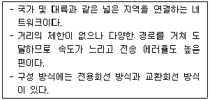
- LAN
- MAN
- WAN
- SIP
(정답률: 75%)
68. 다음 설명에 해당하는 파일로 알맞은 것은?
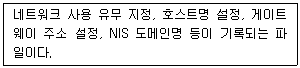
- /etc/sysconfig/network-scripts
- /etc/sysconfig/network
- /etc/resolv.conf
- /etc/passwd
(정답률: 53%)
69. 다음 중 데이터의 암호화와 해독을 수행하고, 효율적인 전송을 위해 필요에 따라 압축과 해제를 수행하는 OSI 모델 계층으로 알맞은 것은?
- 응용 계층
- 데이터링크 계층
- 물리 계층
- 표현 계층
(정답률: 63%)
70. 다음 중 이더넷 환경에서 다중 접속의 반송파 감지 및 충돌 탐지 방식을 뜻하는 용어로 알맞은 것은?
- CSMA/CA
- CSMA/CD
- FDDI
- DQDB
(정답률: 62%)
71. 다음과 같은 조건일 때 설정되는 브로드캐스트 주소 값으로 알맞은 것은?
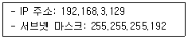
- 192.168.3.126
- 192.168.3.127
- 192.168.3.190
- 192.168.3.191
(정답률: 60%)
72. 다음 중 이더넷 카드의 Link mode를 Auto-negotiation에서 1000Mb/s Full duplex로 변경하는 명령으로 알맞은 것은?
- route
- ifconfig
- netstat
- ethtool
(정답률: 66%)
73. 다음 설명에 가장 적합한 프로그램으로 알맞은 것은?
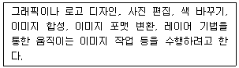
- Eog
- ImageMagicK
- Gimp
- Totem
(정답률: 50%)
74. 다음 중 마이크로소프트사의 엑셀(Excel)을 대체할 수 있는 프로그램으로 알맞은 것은?
- LibreOffice Writer
- LibreOffice Dreaw
- LibreOffice Calc
- LibreOffice Impress
(정답률: 69%)
75. 다음 설명에 해당하는 용어로 알맞은 것은?
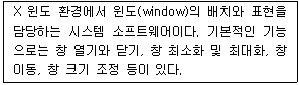
- 윈도 매니저
- 데스크톱 환경
- 디스플레이 매니저
- 데스크톱 매니저
(정답률: 62%)
76. 다음은 X 서버 실행 시에 생성된 인증키 값을 확인하는 과정이다. ( 괄호 ) 안에 들어갈 명령으로 알맞은 것은?
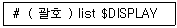
- xauth
- xhost
- xset
- echo
(정답률: 60%)
77. 다음 명령의 결과에 대한 설명으로 가장 알맞은 것은?
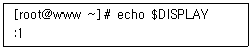
- X 클라이언트 프로그램 실행이 활성화된 상태이다.
- X 클라이언트 프로그램 실행이 비활성화된 상태이다.
- X 클라이언트 프로그램 실행 시 첫 번째 X 윈도에 실행된다.
- X 클라이언트 프로그램 실행 시 두 번째 X 윈도에 실행된다.
(정답률: 49%)
78. 다음 중 GNOME과 가장 거리가 먼 것은?
- konqueror
- nautilus
- metacity
- mutter
(정답률: 49%)
79. 다음 설명에 해당하는 라이브러리로 알맞은 것은?
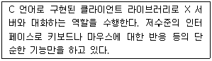
- Qt
- Xlib
- GTK+
- Motif
(정답률: 59%)
80. 다음 중 시스템 시작 시 X 윈도 모드로 부팅이 되도록 설정하는 명령은?
- systemctl set-default multi-user.target
- systemctl set-default runlevel3.target
- systemctl set-default runlevel5.target
- systemctl set-default x.target
(정답률: 63%)